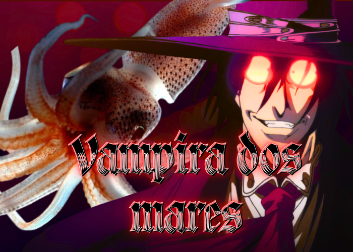
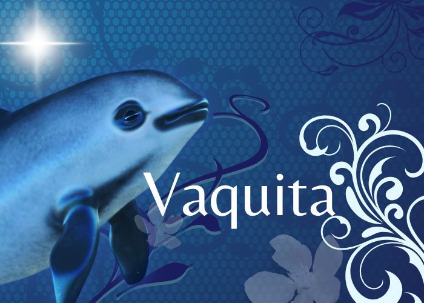
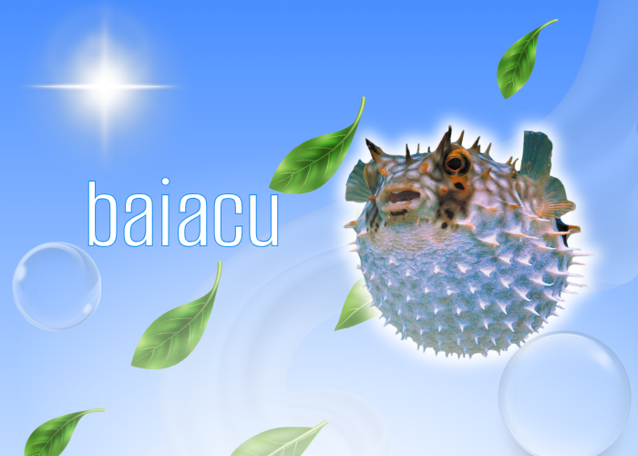

Veja nossos artigos

A Encantadora das Profundezas
Lula-vampira-do-inferno encanta cientistas com estratégias surpreendentes de sobrevivência nas profundezas

Foca do Hawai sofre grande risco de extinção
Uma das espécies mais raras do planeta enfrenta ameaça de extinção devido à perda de habitat e poluição dos oceanos.

Vaquita Luta Contra a Extinção no Golfo da Califórnia
Considerada o mamífero marinho mais ameaçado do mundo, a vaquita enfrenta risco crítico de extinção devido à pesca ilegal em seu habitat natural.

Baiacu Criado em Cativeiro Pode Revolucionar o Tradicional Fugu Japonês
Sem Veneno, Baiacu Criado em Cativeiro Pode Revolucionar o Tradicional Fugu Japonês

Tartaruga-Gigante de Galápagos Luta para Sobreviver
A icônica tartaruga-gigante de Galápagos enfrenta ameaças ambientais, enquanto esforços de conservação tentam proteger a espécie.